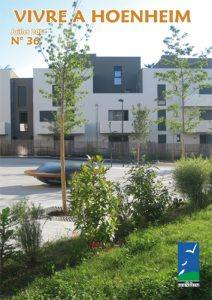

Le mag
Vivre à Hoenheim N°39

Au programme : trois séances du conseil municipal, futurs travaux rue du Maréchal Leclerc, un préau à l’école élémentaire Bouchesèche, retour à la semaine des quatre jours à l’école, le 3ème Forum des seniors …
Vivre à Hoenheim N°38

Au programme : le dépôt d’incendie opérationnel en janvier, squares et parcs sans tabac, REDOM pour aider les jeunes dans leur problème de poids, concert de la Nouvelle année et cérémonie des vœux, les nouveaux commerces au Centre Ried …
Vivre à Hoenheim N°37

Au programme : les réunions publiques à l’écoquartier et à Champfleury, la rentrée des classes, le programme culturel 2017/2018, les 25 ans de « Semeurs d’étoiles », le concours Fleurissement, l’inauguration du mur des Vosges, des actions pour le développement durable … Télécharger le magazine
Vivre à Hoenheim N°36

Au programme : visite du ban communal, quatre réunions de quartiers, l’inauguration de l’écoquartier « L’Ile aux Jardins », une exposition remarquable en septembre, les sportifs méritants …
Vivre à Hoenheim N°35

Au sommaire : nettoyage du ban communal, projet d’un club-house rue du Stade, les prix des décorations de Noël, le nouveau conciliateur de justice, activités pour les jeunes, les lauréats de l’émission « 4 mariages pour une lune de miel » … Télécharger le magazine